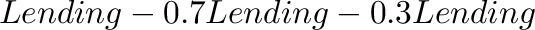
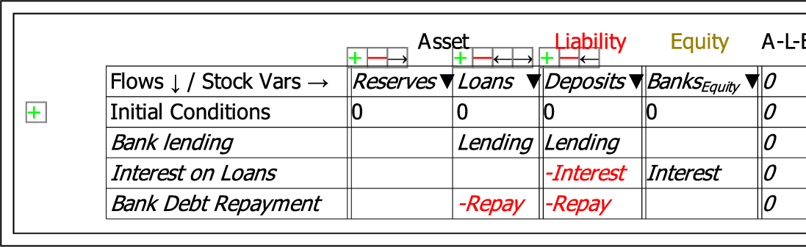

A Stock is defined by entering its name in the row on which the label Flows/Stock Vars is shown. Normally these stocks will be bank accounts, though Godley Tables can be used to model any dynamic system in which the stocks define exclusive categories--such as a epidemiological model of disease transmission, in which the population is divided into mutually exclusive categories such as Infected or Uninfected, in Hospital or Not in Hospital, etc.
Stocks are classified as either Assets, Liabilities or Equity, and the default form enables the entry of only one Asset, Liability and Equity (similarly, there is only one row for recording flows on the default form). To add more columns for accounts, click on the + key below the relevant class (similarly, additional rows for financial transactions are added by clicking on the + key next to a row). This creates an additional column for entering stock names. The - key deletes a stock, and the arrow keys move stocks right and left as desired.
If you press the leftarrow key on the first entry in Liabilities, Minsky will warn you that this will change the classification of the stock from a Liability to an Asset.
The final column in the Table, labeled , checks whether the row sums to zero--which it must do to obey the rules of accounting. The entries in the columns, and the sum itself, are symbolic: words are entered rather than numbers. The sum of that row must be zero according to this formula. Normally this will involve two entries of the same word--for example, Lending--though fractional entries are possible:  still sums to zero.
Three stocks and flows have been defined in the following figure.
